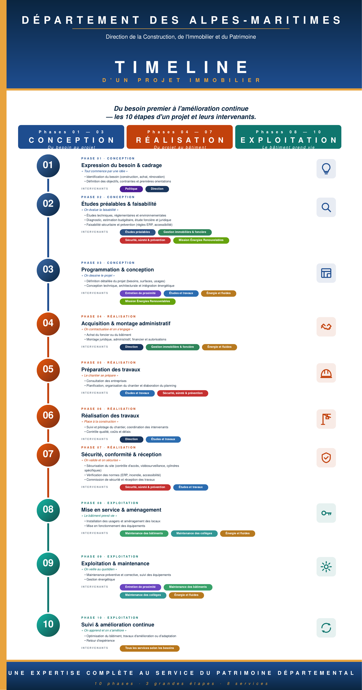

Pour l'imprimeur
Roll-up-DCIP-84x160.pdfVectoriel, à la taille réelle 840 × 1600 mm. Aucune mise à l'échelle à demander. 289 koPour le graphiste
Roll-up-DCIP-84x160.svgIllustrator, Affinity, Inkscape. Textes convertis en tracés. 1,1 Mo Roll-up-DCIP-84x160-150dpi.png4961 × 9448 px — validation écran, montage. 1,2 Mo Aperçu 72 dpi2382 × 4536 px — relecture, pièce jointe légère. 533 ko{kind=link}
{kind=link}
{kind=link}
Les deux applications du stand
Les mêmes QR que le pack du stand, redonnés ici pour l'intégration au roll-up ou à tout autre support.
Postes vacantsdcip06.github.io/JDMM/postes/ ouvrir QR postes — vectorielPour l'imprimeur, net à toute taille. SVG QR postes — imagePour un document ou une présentation. PNG Les trois quizdcip06.github.io/JDMM/quiz/ ouvrir QR quiz — vectorielPour l'imprimeur, net à toute taille. SVG QR quiz — imagePour un document ou une présentation. PNG{kind=link}
{kind=link}
{kind=link}
{kind=link}
Tout en une fois
pack-rollup.zipLes quatre formats du roll-up, les QR et la notice. 3,1 MoAvant d'envoyer quoi que ce soit à l'impression, scannez le QR avec un
vrai téléphone : c'est le seul contrôle qui compte.